0x00 导航
鉴于 AI 绘画的知识点较多，限于篇幅及便于分类组织，我会以一个系列文章的形式记录：
- 系列 01：《AI 绘画原理与工具》
- 系列 02：《AI 绘画模型扫盲》
- 系列 03：《AI 绘画模型推荐》
- 系列 04：《文生图：不会念咒的炼丹师不是一个好画家》
- 系列 05：《图生图：突破次元圈限制》
- 系列 06：《高清修复：轻松拥有 24K 钛合金画质》
- 系列 07：《提示词进阶：渐变|交替|混合》
- 系列 08：《LoRA 专题：五大应用场景》
- 系列 09：《LoRA 训练：不会炼丹的魔法师不是一个好画家》
- 系列 10：《ControlNet: 姿态控制》
- 系列 11：《ControlNet 进阶：打造炫酷的艺术字和二维码》
- 系列 12：《AI 动画初探：整个宇宙为你而闪烁》
你当前正在阅读的是系列 09《LoRA 训练：不会炼丹的魔法师不是一个好画家》
0x10 前言
目前 C 站有大量热门的二次元角色 LoRA ，在它们的帮助下我们可以轻易地画出自己喜欢的人物：
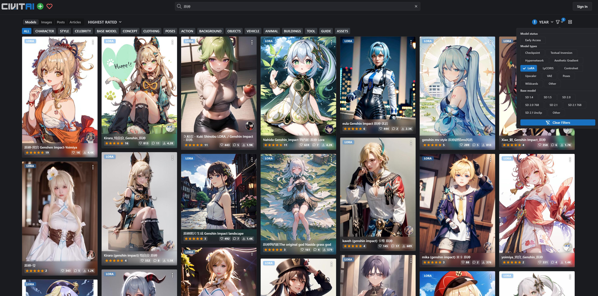
但是如果你喜欢的人物比较冷门，就需要自己去训练 LoRA 模型了，也就是大家普遍称为的 “炼丹”。
在 LoRA 出现之前，SD 只能依靠 DreamBooth 训练的 Checkpoint 大模型来实现作画，如果对大模型产出的效果不满意，那就只能再回去训练，对大模型不断的迭代、微调。
但 DreamBooth 的训练要求高、消耗大、速度慢，一般家庭的电脑很难满足训练门槛，而 LoRA 直接把训练门槛降低了，于是便有大量的人参与到 LoRA 的模型训练当中去：
| 训练门槛 | DreamBooth | LoRA |
|---|---|---|
| 显存要求 | ≥ 12GB |
≥ 8GB |
| 训练对象 | 人脸、物件 | 人物形象、画风、概念、服饰、元素 |
| 产物大小 | ≥ 2GB |
8 - 200MB |
| 微调难度 | 麻烦 | 简单 |
LoRA 需要和大模型搭配一起使用，它是作为大模型的微调的一个存在。
有一个比喻是，大模型是一本字典，Lora 就是字典中的一张小夹页，它上面书写着字典中一些特定内容的读书笔记。字典本身的内容不会被夹页改变，但夹页却可以在字典之外向 AI 提供笔记上的衍生信息。
在这张夹页上可能记录了：
- 对特定人物形象的描绘
- 对视觉艺术风格的实现
- 某种特定元素，如服饰、姿势等
简单来说，LoRA 的实用意义在于 固定特定人物角色特征，它把这些特征信息组合在一张小夹页上，使用时只要在提示词中呼唤这些小夹页的名称（触发词），即可把这些特征信息快速调取出来。
了解 LoRA 的本质，可以对我们下面的训练打下一个想象基础。
0x20 环境准备
- 下载并安装 python 3.10
- 使用管理员运行 PowerShell，更改命令执行策略： 执行命令
Set-ExecutionPolicy Unrestricted
若不变更策略，默认会禁止执行第三方
*.ps1脚本
0x30 安装训练包
时至今日，已经有很多大佬贡献了便利的工具，我们就搭个便车了。
在第一节我们使用了 秋葉aaaki 大佬的 NovelAI，因此我们训练也用 “秋葉aaaki系” 的工具好了。
秋葉aaaki 训练包在网上可以看到有两个版本：
- 无界面版： https://github.com/Akegarasu/lora-scripts
- 有界面版： https://www.bilibili.com/video/BV1AL411q7Ub （lora-scripts-gui）
其实都一样有界面的，建议安装 vscode 搭配使用：
| 步骤 | lora-scripts | lora-scripts-gui |
|---|---|---|
| 更新代码 | git pullgit submodule initgit submodule update |
A强制更新-国内加速.bat |
| 安装环境 | install-cn.ps1 |
install-cn.ps1 |
| 启动界面 | run_gui.ps1 |
A启动脚本.bat |
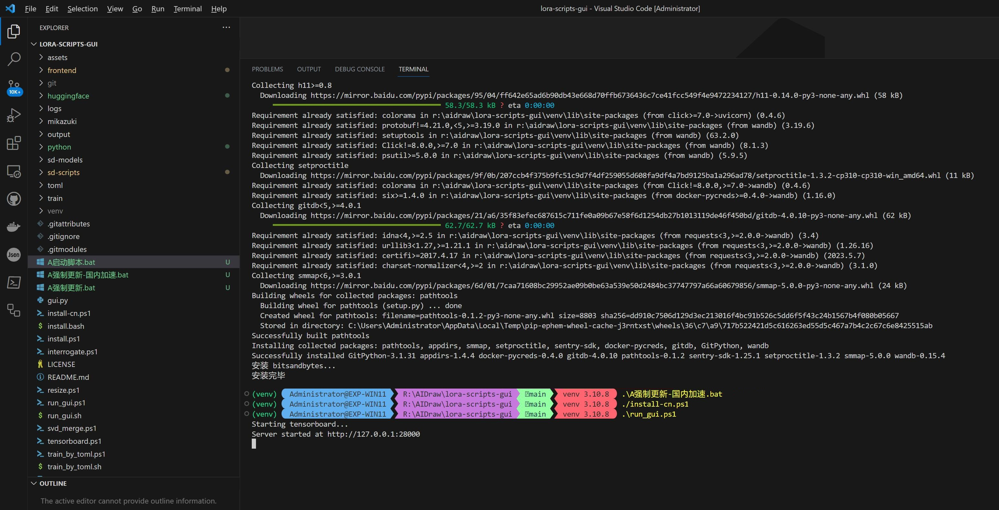
执行命令后，会自动在浏览器打开 http://127.0.0.1:28000/ ，需要等 1 分钟左右才能刷出页面：
至此已经安装完成了，其实 lora-scripts-gui 只是多了 3 个 bat 脚本简单封装了 git 和 python 命令而已，目的应该是方便不会编程的同学，效果上完全一样、不必介意拿到的是哪个版本。
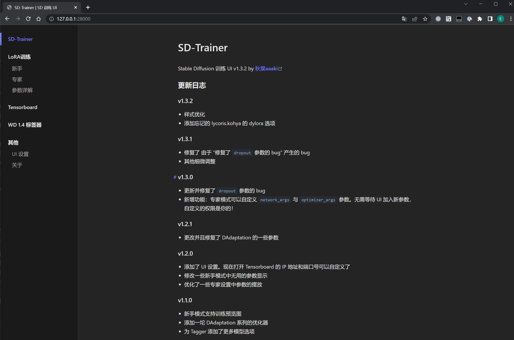
启动的界面不是训练用的，它的主要作用有三个，下面训练的过程都会用到：
- 训练参数解释和配置： 把
train.ps1的脚本参数进行了封装，在界面上配和在脚本中修改，效果和直接改脚本是一样的 - Tagger 图片打标： 就是 SD-WebUI 的打标功能，但是不支持裁剪，所以目前还是在 SD-WebUI 准备图片素材比较方便
- TensorBoard： 用于查看训练过程中的各种指标、图表和汇总数据，可以显示训练模型的损失、准确率、梯度直方图以及其他有关模型性能的信息
0x40 素材准备
在上一节已经说过， LoRA 有五大应用场景： 人物形象、画风、概念、服饰、元素。
故确定要训练的主题后，就可以在各种途径寻找素材，要求：
- 不少于 15 张的高质量图片，一般可以准备 20-50 张图
- 减少重复或相似度高的图片
- 图片主体内容清晰可辨、特征明显，图片构图简单，避免其它杂乱元素
- 如果是人物照，尽可能以脸部特写为主（多角度、多表情），再放几张全身像（不同姿势、不同服装）
具体的筛选标准：
- 脸部有遮挡的不要（比如麦克风、手指、杂物等）
- 背景太复杂的不要（比如一堆字的广告板，或夜市太乱的背景）
- 分辨率太低的不要（例如希望画
512x512，则训练至少需要用 2 倍分辨率1024x1024）， - 光影比较特殊的不要（比如暗光，背光等）
- 不像本人特征的不要（比如大部分训练集都是长发，那么短发显脸大的不要，大笑毁形象的不要）
- 化妆太浓重的、美颜太严重的不要
由于 C 站没有找到 “鸣人-仙人模式”（简称 仙鸣）的 LoRA， 这里就以训练这个角色为例子。
首先在 ${lora-scripts}/train 训练数据目录下（如果不存在则创建）创建本次的训练主题目录 RishiNaruto（名字随意）。
然后在 Google 尽可能搜索了 仙鸣 比较清晰且画风一致的图片，存放到 ${lora-scripts}/train/RishiNaruto/org 目录下。
接着用 PhotoShop 把背景都去掉、处理后的图片放到 ${lora-scripts}/train/RishiNaruto/ps 目录下：
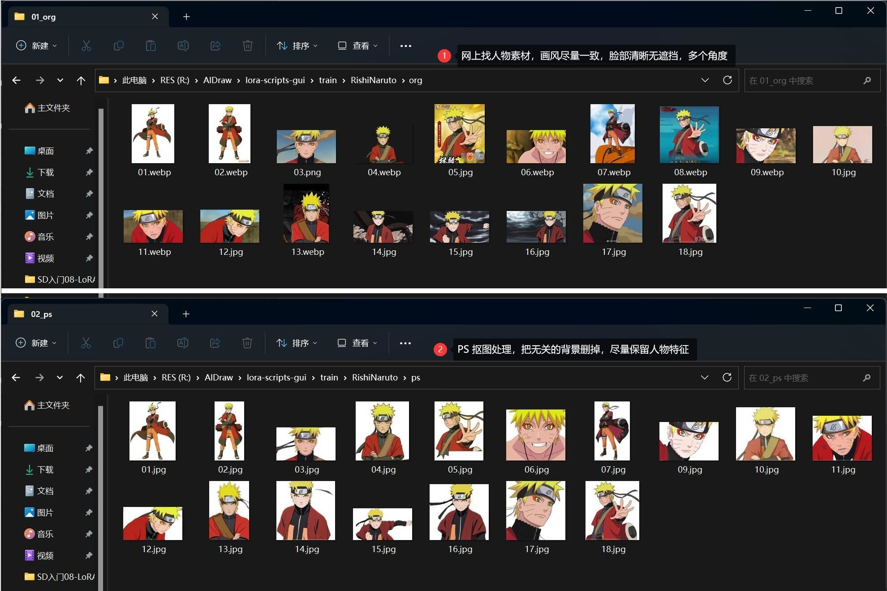
PhotoShop 抠图技巧
建议安装 PhotoShop 2023，内置了很多 AI 工具辅助快速抠图或处理水印：
- 对象选择工具，直接识别人体范围，配合魔棒真的好用：
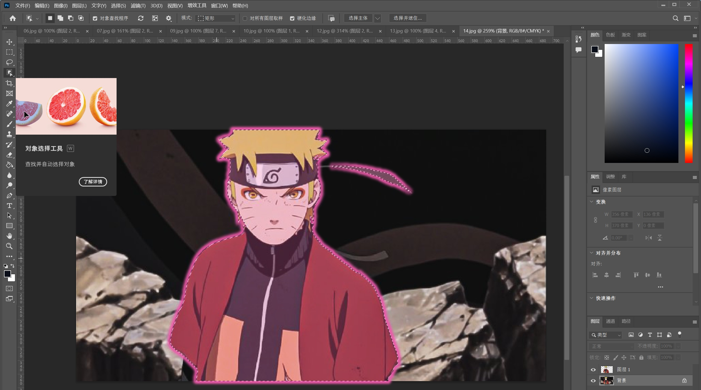
- 内容识别（选区 -> 右键 -> 填充）：
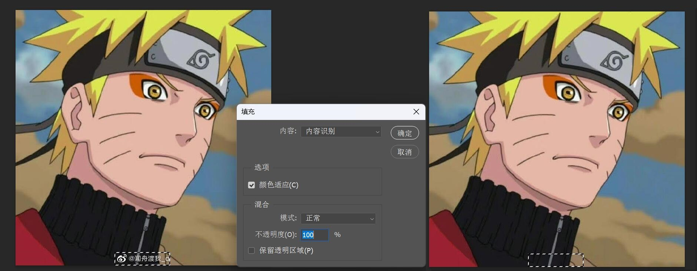
0x50 图片预处理
预处理主要做两件事：
- 裁剪图片
- 打标（tagger）
0x51 方法一：SD-WebUI
SD-WebUI 在「训练」->「图像预处理」支持同时实现这两种预处理：
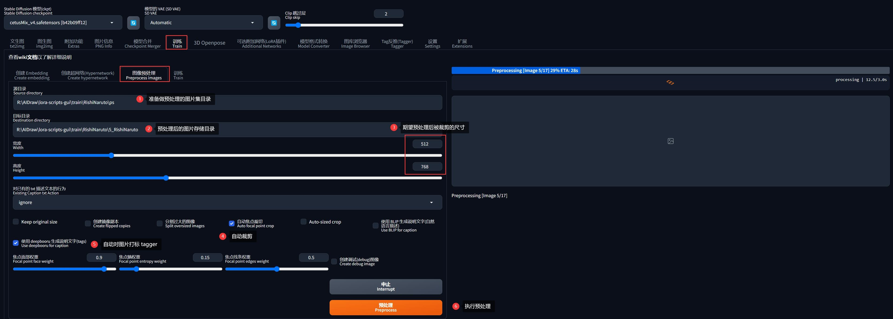
参考上图配置即可，其中：
- 图片分辨率根据实际素材图片最接近的分辨率去设置即可（必须为 64 的整数倍），勾选「自动焦点裁切」即可自动以人脸为中心裁剪为设置的分辨率。
- 勾选「使用 deepbooru 生成说明文字(tags)」则会对裁剪后的图像自动打标，其实后台用到的就是「Tag反推(tagger)」的功能。
- 目标目录位置任意即可，这里我为了方便起见，设置了
${lora-scripts}/train/RishiNaruto/5_RishiNaruto目录，这个目录其实就是后面训练 LoRA 时的数据集输入源，目录名称是有要求的，下文会提到。
执行预处理后，在 5_RishiNaruto 目录下每张图片都会新增一个同名的 txt 文件，此文件就是对应图片的提示词标签：
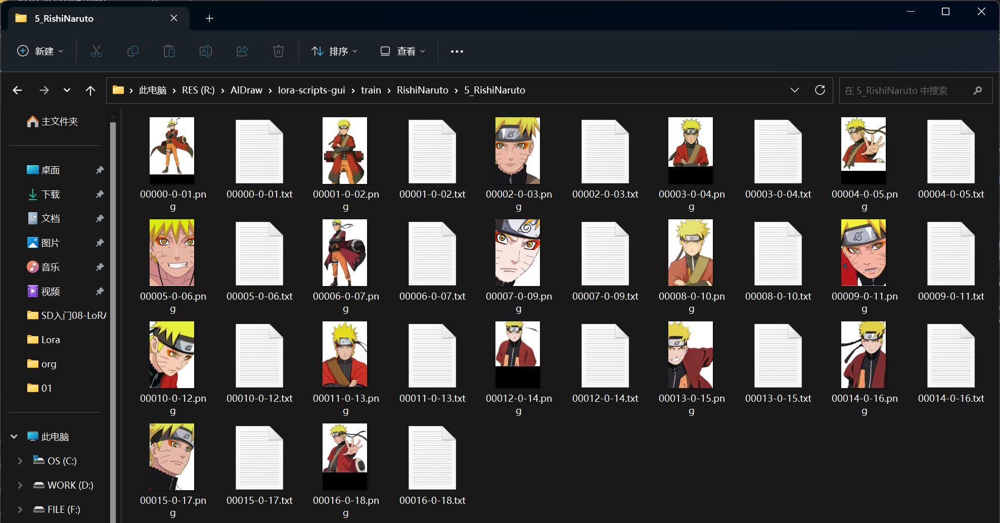
最后就是添加 LoRA 的触发词，建议使用 VsCode 批量添加。
例如我希望的触发词为 rishi naruto，只需要通过正则表达式批量匹配 5_RishiNaruto/*.txt 中的行首、替换为 rishi naruto, 即可：
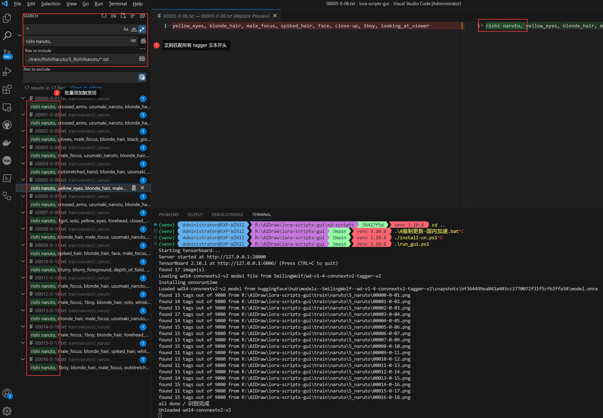
打标后、在训练前记得终止 SD-WebUI 进程，不然会吃显存的
0x52 方法二：PhotoShop + lora-scripts
目前 lora-scripts 不支持自动裁剪图片，所以这个方法需要在前面抠图时，顺手用 PS 裁剪为统一尺寸。
但是好处是不需要启动 SD-WebUI 打标，而且可以自动追加触发词到 *.txt：
- 在 lora-scripts 的界面找到 标签器
- 设置 PS 处理过的图片目录
5_RishiNaruto - 填写触发词
rishi naruto - 启动打标
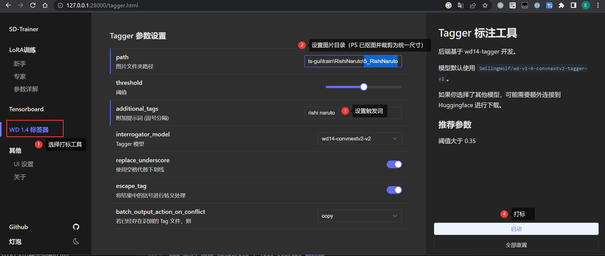
0x53 方法三：PhotoShop + SD-WebUI
这个方法比较鸡肋，不太建议使用（毕竟都打开 SD-WebUI，没必要再绕一圈了）。
同样需要在前面抠图时使用 PS 裁剪为统一尺寸，然后借助 SD-WebUI 的「Tag反推(Tagger)」批量打标：
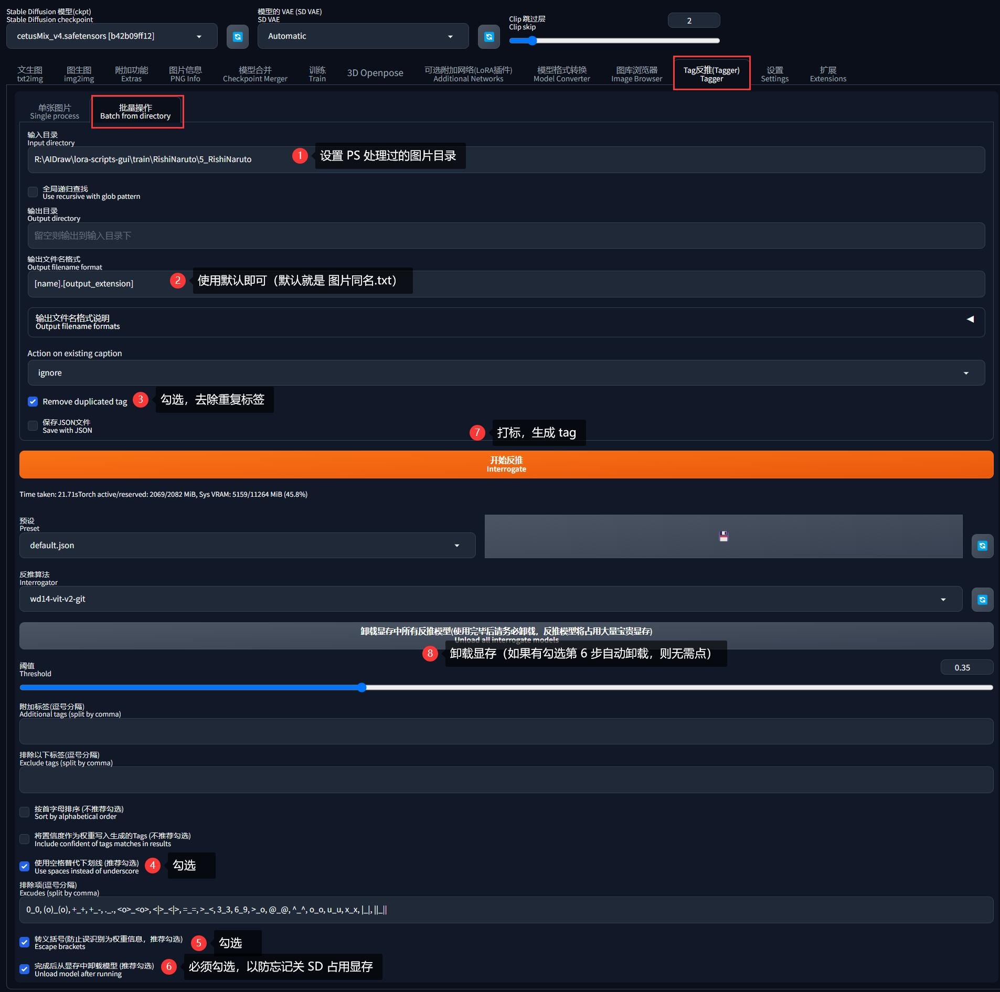
这种方法同样需要使用 VsCode 批量添加触发词：
0x60 打标优化
预处理生成 tags 打标文件后，就需要对文件中的标签再进行优化，一般有两种优化方法：
- 保留全部标签
- 删除部分特征标签
0x61 保留全部标签
即对自动生成的标签不做删标处理, 直接用于训练。一般在训练画风，或快速训练人物模型时使用。
- 优点：
- 不用处理 tags 省时省力
- 调用方便，可以简单还原人物特征
- 缺点：
- 训练时需要把 epoch 训练轮次调高，导致训练时间变长
- 使用时需要输入大量 tag 来调用
0x62 增/删部分特征标签
首先要了解删除标签的作用：
- 删除标签：等价于将素材图片特征与 LoRA 做绑定，可以理解为训练出来的 LoRA 特征会覆盖基础模型同名标签所指向的特征
- 保留/添加标签：等价于引入基础模型中该标签的特征，表示在使用 LoRA 时、这个位置的标签是可自定义的，画面可调范围就大
譬如当前正在训练的二次元角色 “仙鸣”，要保留 “橙色眼影” 作为 LoRA 的自带特征，那么就要将 orange eyeshadow 标签删除，以防止将基础模型中的 orange eyeshadow 引导到正在训练的 LoRA 上，当使用这个 LoRA 出图时，即使在 prompt 写上 blue eyeshadow，鸣人的眼影也不会变成蓝色。反之如果保留标签，则可以画出任意颜色的眼影。
通常借助第三方工具对标签进行调整，如 BooruDatasetTagManager，一般情况下：
- 需要删掉的标签（避免使用时替换）：
- 人物特殊特征：
orange eyeshadow、cross eye pupil、konohagakure等 - 服饰特殊特征:
scroll、forehead protector等
- 人物特殊特征：
- 需要保留的标签（以便使用时替换）：
- 人物通用特征
yellow eyes、short hair、teeth等 - 人物动作：
crossed arms、stand等 - 脸部表情：
smile、closed mouth等 - 镜头位置：
full body、upper body、close up等 - 背景：
white background等
- 人物通用特征
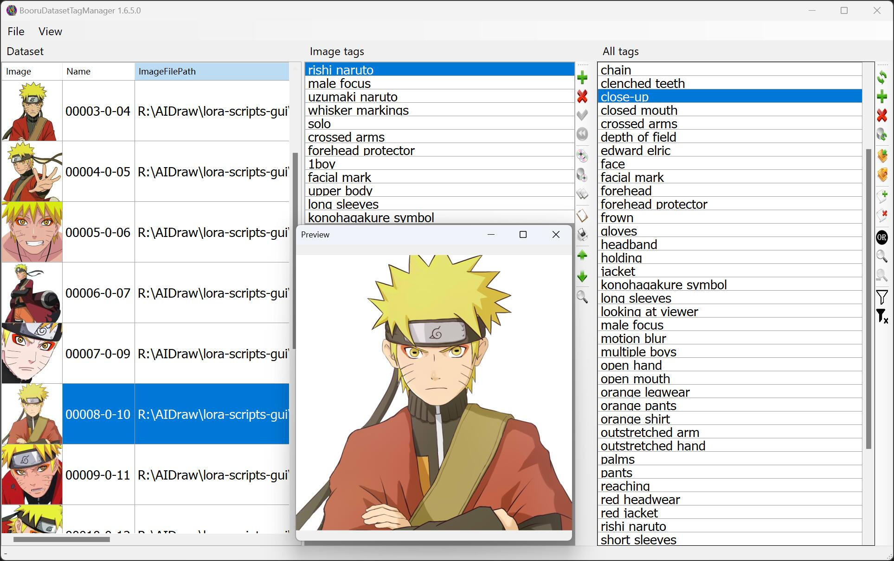
这种做法的优缺点也很明显：
- 优点：
- 只需要输入少量 tag 来调用便可精确还原人物特征
- 更方便微调控制部分特征、出图灵活
- 缺点：
- 标签筛选麻烦，比较耗时、需要有一定经验积累
- 标签选择不当时，容易导致过拟合，泛化性降低
什么是过拟合 ？
过拟合（overfitting）指的是模型在训练数据上表现得非常好，但在未见过的测试数据上表现较差的现象。
简单来说，过拟合意味着模型过于专注于训练数据的细节和噪声，导致了对新数据的泛化能力下降，对出图的影响就是画面细节丢失、画面模糊、画面发灰、边缘不齐、无法做出指定动作、在一些大模型上表现不佳等。
过拟合可能由以下因素导致：
- 训练数据不足：当可用的训练数据较少时，模型可能会过于依赖这些数据，记住了训练样本的细节和噪声，而无法正确泛化到新的数据。
- 模型复杂度过高：如果模型的复杂度（参数数量）过高，它有足够的容量来记住训练数据的每个细节，甚至是噪声，而不是学习到一般的模式。这使得模型无法适应新的数据。
- 特征选择不当：选择不合适的特征或使用过多的特征也可能导致过拟合。如果特征过多或与目标变量之间存在冗余或无关联的特征，模型可能会过于拟合训练数据。
- 过度训练：当模型在训练数据上进行过多的训练时，它有可能过于适应这些数据，而不是学习到一般的模式。
为了避免过拟合，可以采取以下措施：
- 增加训练样本的数据量：更多的训练数据可以帮助模型学习到更广泛的模式，减少过拟合的可能性。
- 减少模型复杂度：简化模型结构、减少模型的参数数量，可以降低过拟合的风险。
- 特征选择与降维：选择与目标变量相关且不冗余的特征，可以减少过拟合的可能性。
- 交叉验证：使用交叉验证可以评估模型在不同数据集上的泛化能力，帮助检测和防止过拟合。
0x70 训练环境配置
0x71 设置训练数据集
把前面的预处理后的素材图片和标签文件，全部放到 ${lora-scripts}/train/RishiNaruto/5_RishiNaruto 目录下即可（目录不存在则创建）。
其中目录名称 5_RishiNaruto 是有要求的，格式为 ${图片训练时的重复次数}_${所训练的概念名称}：
${图片训练时的重复次数}： 其实没要求，但一般建议5-8，数值越大训练时间越长，但太大可能导致过拟合_： 下划线是必须的${所训练的概念名称}： 亦可以理解为主题名称，同一个 LoRA 模型是支持同时训练多个概念的，例如这里除了训练“仙鸣”，我还想同时训练“佐助”，那我就可以再在5_RishiNaruto的同级目录中新建一个8_Sasuke的目录，然后把 佐助 的素材丢进去
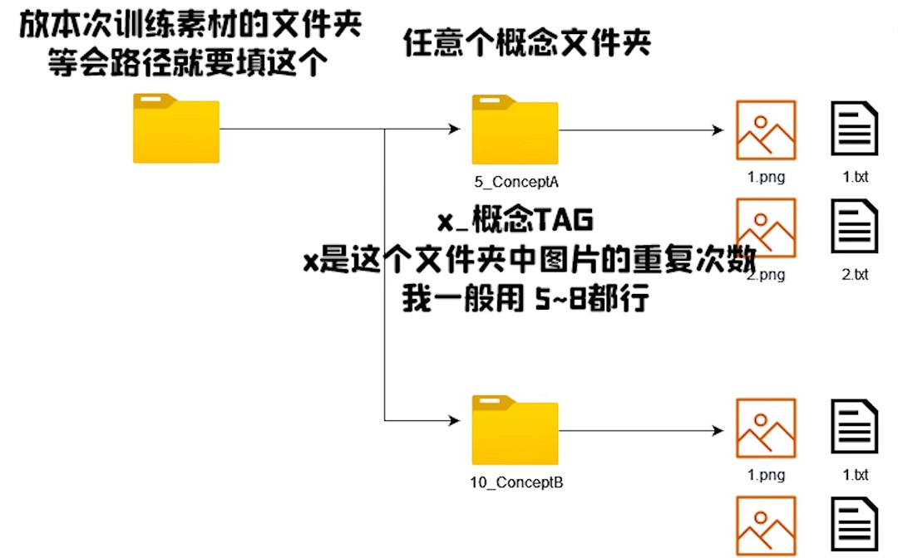
0x72 设置训练用的大模型
把大模型放到 ${lora-scripts}/sd-models/ 目录下就可了，已经在用的模型可以直接从 SD 的大模型目录 %{NovelAI}/models/Stable-diffusion/ 下复制过去。
大模型可以参考《AI 绘画模型推荐》选择，一般选择标准为：
- 需要和正在训练的素材类型一致： 譬如说你用二次元大模型训练真人的图片肯定就有问题了
- 尽量选祖宗级别的模型： 例如用 SD 1.5、 SD 2.1、 NovelAI 原版泄露模型训练出来的 LoRA 会更通用。如果在融合模型上训练（模型名称一般有
Mix，譬如 orangemix 、Anything 融合了一大堆东西），可能会仅仅在你训练的底模上生成图片拥有不错的效果，但是切换到别的大模型就没法用了，失去了可迁移性和通用性。具体选择哪个看个人需求。
0x73 设置训练参数
推荐在 lora-scripts 的界面配置，访问页面 http://127.0.0.1:28000/，找到其中的「新手」，里面只保留了必要配置：
- 底模路径： 相对
${lora-scripts}根目录而言的大模型文件路径，例如这里配置为./sd-models/cetusMix_v4.safetensors - 训练数据集路径： 就是前面存放 素材图片和标签文件夹的 父目录，例如这里为
${lora-scripts}/train/RishiNaruto。注意不要配置到概念目录5_RishiNaruto，这是因为可能有多个概念，程序会自动从父目录下都找到它们。 - 图片分辨率： 素材图片裁剪的尺寸，必须是 64 的整数倍
- 模型保存名称和保存文件夹： 随便就好，一般都是输出到
./output
「专家」模式下可以看到所有配置，不过等后面进阶后再了解就行，现在先保持默认值
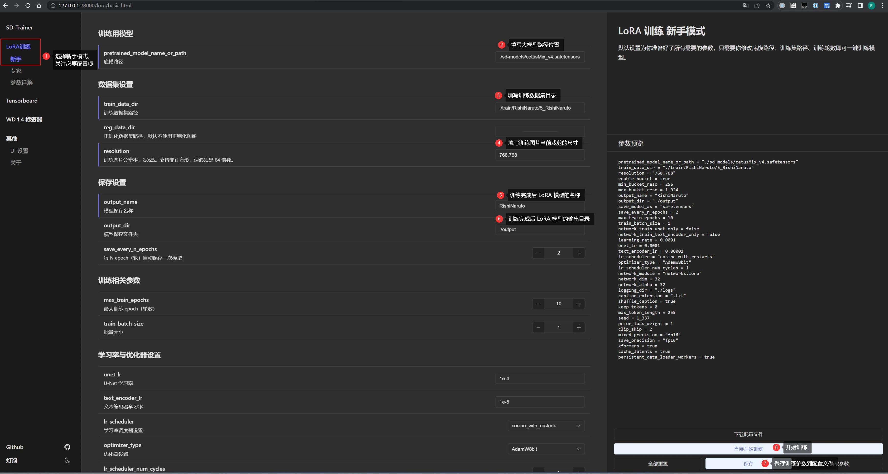
在界面修改后必须先点保存按钮，再点训练按钮，否则是读取不到刚刚修改的配置的。
究其原因，其实这个界面只是读取 ${lora-scripts}/train.ps1 脚本的配置参数呈现出来、然后再调用这个脚本进行训练而已。所以直接修改并执行 ${lora-scripts}/train.ps1 脚本也是一样的：
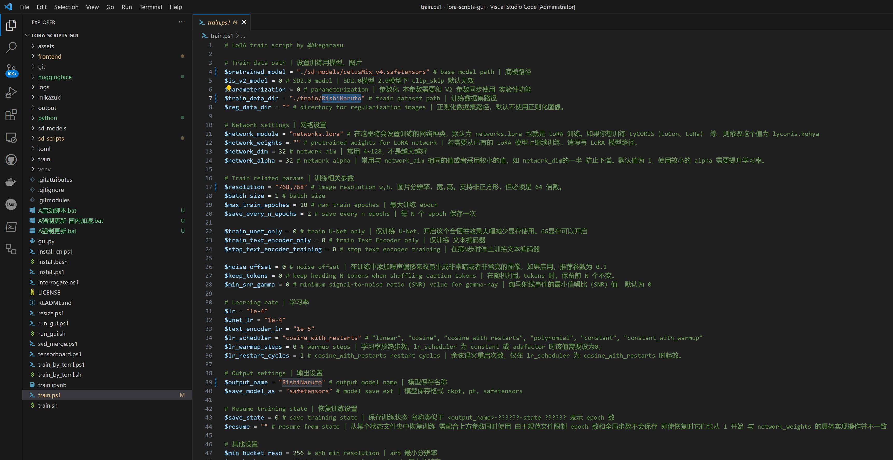
如果想了解各个训练参数的含义和作用，在界面找到「参数详解」就能查到：
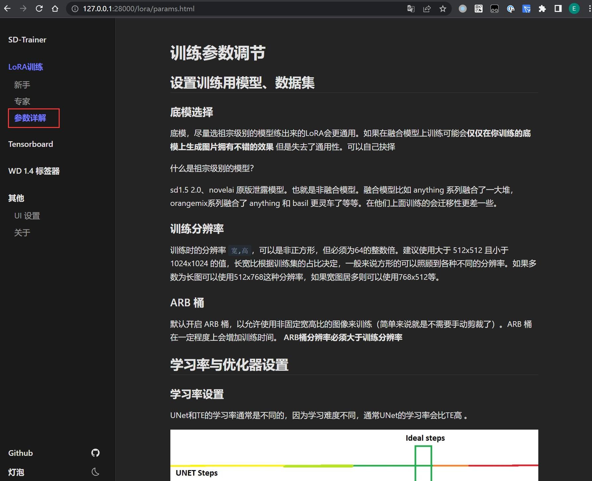
0x80 模型训练
训练参数配置完成后，在界面点击「直接开始训练」或在终端执行命令 ./train.ps1 都可以启动训练。
训练过程可以在界面或后台看到进度和各项指标：
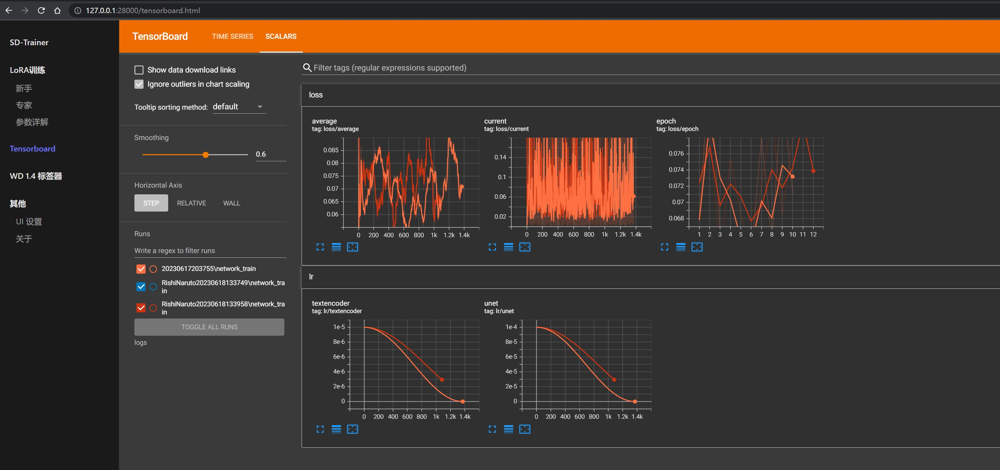
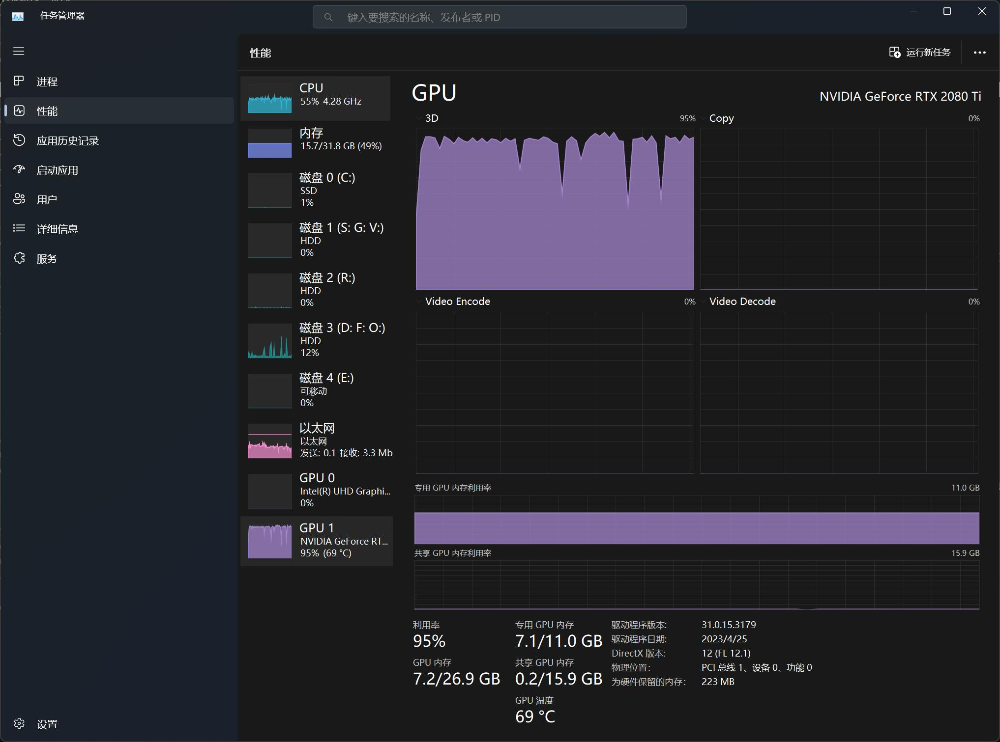
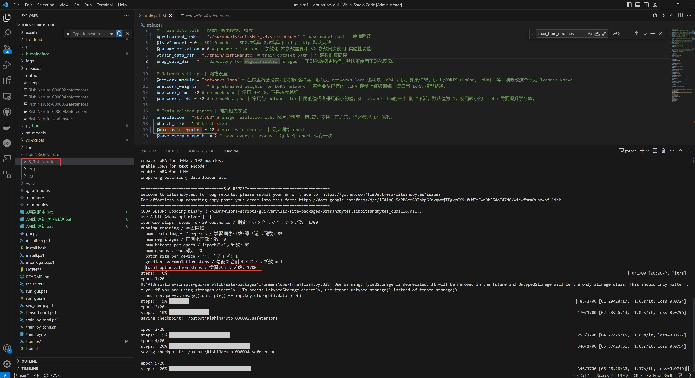
注意 steps 代表总训练步数，一般总训练步数不低于 1500，不高于 5000，其计算公式为：
steps = (${ImageAmount} x ${Repeat} x ${Epoch}) / ${BatchSize}
其中：
- ImageAmount: 训练的素材图片数量
- Repeat: 每张图片训练时的重复次数，就是前面设置概念目录时开头的数字
- Epoch: 训练轮次，修改位置为
train.ps1下的$max_train_epoches参数 - BatchSize: 一次性送入训练模型的样本数，修改位置为
train.ps1下的$batch_size参数，并行数量越大、训练速度越快，但是占用显存越大，显存小推荐 1，12G 以上可以 2-6。
训练完成后，模型文件会保存到设置的输出目录，而保存模型的个数为 max_train_epoches / save_every_n_epochs。
例如当前设置了 max_train_epoches = 20， save_every_n_epochs = 2，则可以在 ${lora-scripts}/output 目录下找到 10 个 LoRA 模型：
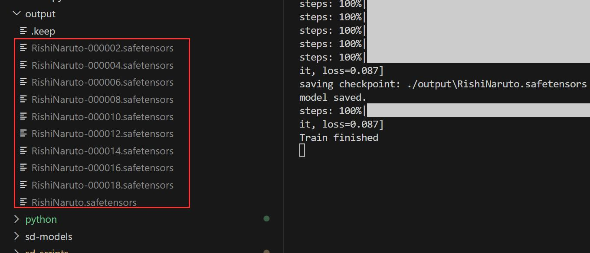
0x90 模型测试
模型训练完成后，需要对训练好的这些模型进行测试，以便找出最训练效果最好的那个模型（哪个模型在哪个权重值下表现最佳）。
因为 SD-WebUI 提供了一些脚本用于测试，所以现在先把 ${lora-scripts}/output 目录下刚刚训练的所有模型文件复制到 SD 的 %{NovelAI}/models/Lora/ 目录下，然后启动 SD-WebUI。
0x91 测试要点
- 基于「文生图」测试
- 基础模型要使用训练用的大模型
- 在 Prompt 填写触发词，譬如这里为
rishi naruto - 在 Prompt 还要填写一个训练人物本来没有的特征，比如
smile，以测试泛用性 - 分辨率要和训练时的比例一致，如这里为
768x768即1:1，那么测试的出图比例也应该为1:1，如这里为512:512
0x92 测试方法
- 首先确保已安装 可选附加网络(LoRA插件)
- 在出图区域中展开「可选附加网络(LoRA插件)」（不要勾选「启用」），在「模型1」中选择任意一个 LoRA 模型。这一步的目的是为了激活「X/Y/Z 图表」的下拉框选单，否则会为空。
- 在「脚本」中选择「X/Y/Z 图表」
- X 轴类型： 选择「可选附加网络 模型1 (AddNet Model 1)」
- X 轴值： 选择所有刚刚训练出来的、需要测试的 LoRA 模型（第 2 步没做的话无法选择）
- Y 轴类型： 选择「可选附加网络 权重1 (AddNet Weight 1)」
- Y 轴值： 输入
0.6,0.7,0.8,0.9,1 - Z 轴类型： 留空
- Z 轴值： 留空
- 点击生成按钮开始测试
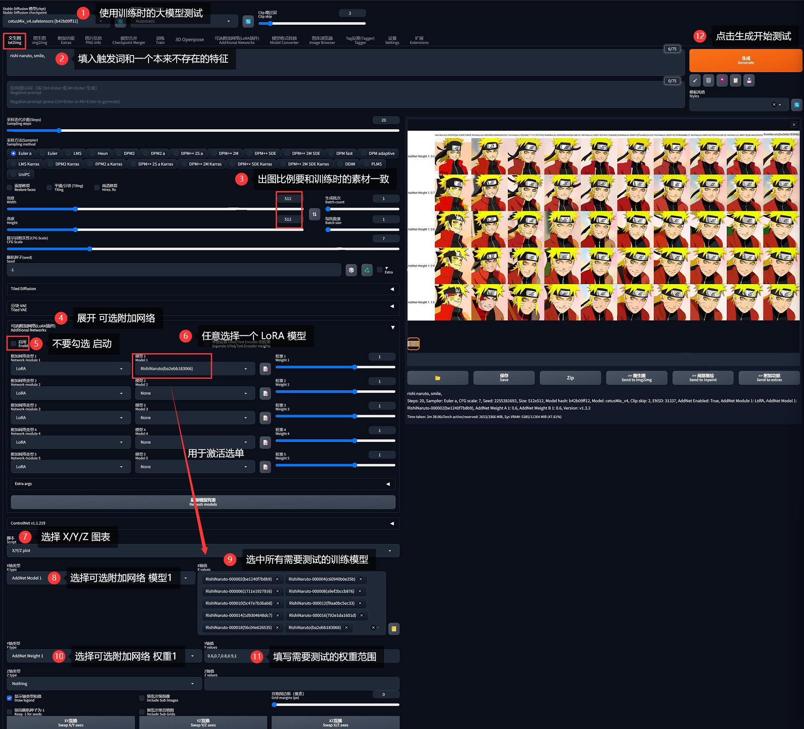
最终得到一张二维的对比图，看哪一个训练结果在哪个权重下表现最好、最像的：
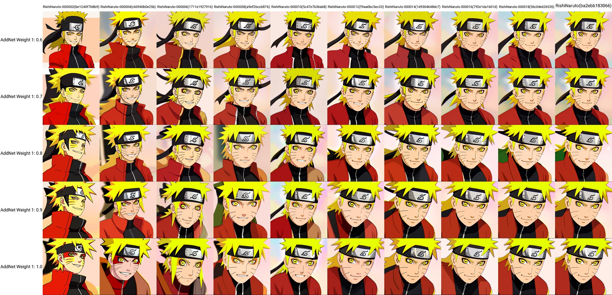
0xA0 训练效果
最后选出训练效果最好的 LoRA 模型，更改易记的模型名称后、直接放入 SD 的 LoRA 模型目录下，配合训练时设置的触发词即可使用：
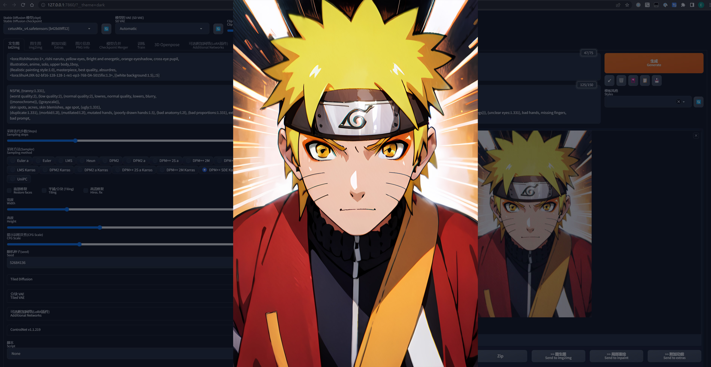
其他训练效果不好的 LoRA 可以删除